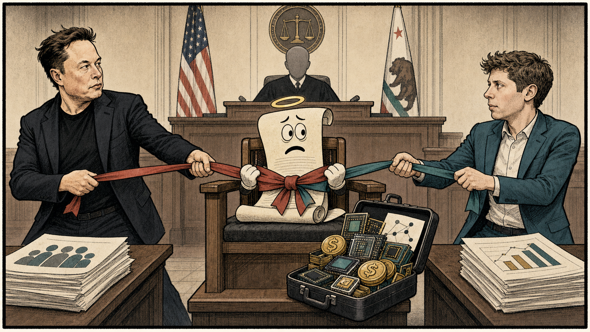
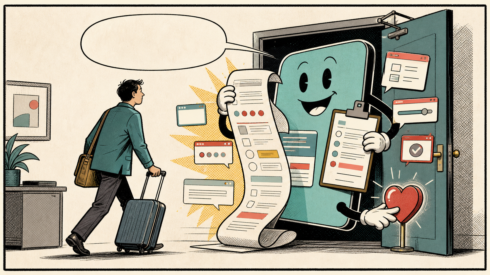

The machine you do not see
The cold chain is easiest to notice when it fails. The milk turns, the fish smells wrong, the vaccine is discarded, the truck door hangs open too long, the freezer alarm starts shouting.
UNEP, FAO, IIR, and IEA sources together describe a hidden infrastructure that links food loss, refrigeration, energy demand, nutrition, and climate impact. [3][2]
Cold is not just a temperature. It is a logistics condition that has to be maintained through farms, docks, warehouses, trucks, stores, clinics, and kitchens.
Put plainly, this is where the large system becomes readable. The policy language, engineering vocabulary, scientific measurement, and market signals all matter, but the test is more ordinary: whether people can see the risk early enough to make a better decision before the failure becomes personal.
The paradox is that cold chains can reduce waste and protect health while also consuming power and using refrigerants that must be managed carefully. [4][8]
A shopper sees strawberries. A nurse sees a vaccine vial. A farmer sees a product that must reach market before time and heat ruin the work.
The everyday stakes are the reason the receipts matter. A source note can look small at the bottom of a page, but each one is a handhold for the reader: a way to separate what the story knows from what it argues, what has been measured from what still has to be judged.
The cold chain is invisible infrastructure until a warmer world makes it impossible to ignore.
Food waste is climate policy
Food waste sounds domestic, like a guilty refrigerator shelf. In reality it is land, water, fertilizer, diesel, labor, refrigeration, transport, and money thrown away together.
UNEP's Food Waste Index, FAO food-loss material, FAO footprint work, and World Bank cold-chain reporting show that wasted food is an environmental and economic problem across the supply chain. [1][2]
The cold chain cannot solve all waste. Some losses come from standards, behavior, packaging, harvest timing, and markets. But temperature is one of the few variables that can turn time from enemy into margin.
Put plainly, this is where the large system becomes readable. The policy language, engineering vocabulary, scientific measurement, and market signals all matter, but the test is more ordinary: whether people can see the risk early enough to make a better decision before the failure becomes personal.
More refrigeration can prevent waste, yet inefficient cooling can increase electricity demand and emissions. That means the answer must be better cold, not cold at any cost. [10][9]
Kitchen test: what disappears if cold fails?
Think beyond ice cream. A cold-chain failure can mean spoiled milk, unsafe fish, wasted vaccines, lost farmer income, higher prices, more methane from food waste, and medicines that no longer work as intended.
For a farmer, a cold room can mean selling tomorrow instead of dumping tonight. For a family, it can mean safer food and less money wasted.
The everyday stakes are the reason the receipts matter. A source note can look small at the bottom of a page, but each one is a handhold for the reader: a way to separate what the story knows from what it argues, what has been measured from what still has to be judged.
Food-waste policy will remain incomplete until it treats cold storage as infrastructure rather than luxury.
Vaccines ride on trust and temperature
A vaccine dose is a medical promise with a temperature range. If the cold chain fails, the promise can fail before the nurse ever opens the vial.
WHO, UNICEF, Gavi, and sustainable cold-chain sources all show how immunization depends on equipment, monitoring, transport, maintenance, and last-mile delivery. [5][6]
The cold chain is therefore part of the public's trust in medicine. People see the shot, not the refrigerators, carriers, data loggers, and power systems that kept it viable.
Put plainly, this is where the large system becomes readable. The policy language, engineering vocabulary, scientific measurement, and market signals all matter, but the test is more ordinary: whether people can see the risk early enough to make a better decision before the failure becomes personal.
The last mile is often the hardest mile. Rural roads, unreliable power, extreme heat, and weak maintenance can turn a technical requirement into a public-health barrier. [7][3]
The person waiting at a clinic should not have to think about the journey the vial took. The system should have protected that journey already.
The everyday stakes are the reason the receipts matter. A source note can look small at the bottom of a page, but each one is a handhold for the reader: a way to separate what the story knows from what it argues, what has been measured from what still has to be judged.
Equitable immunization depends on a cold chain that works as well in the difficult places as it does in the easy ones.
Cooling has a power bill
Cold feels clean, but it is not free. Every refrigerator, compressor, warehouse, insulated truck, and cold room is connected to electricity, fuel, maintenance, and design choices.
IEA cooling analysis, UNEP cold-chain reporting, IIR refrigeration work, and World Bank development material connect cooling expansion with energy demand and infrastructure quality. [8][3]
The challenge is not whether more people deserve cooling. They do. The challenge is whether the world can provide it efficiently and cleanly enough to avoid worsening the heat problem it is trying to manage.
Put plainly, this is where the large system becomes readable. The policy language, engineering vocabulary, scientific measurement, and market signals all matter, but the test is more ordinary: whether people can see the risk early enough to make a better decision before the failure becomes personal.
A poor cold chain wastes food. A dirty cold chain wastes energy and climate space. The goal is to escape that trap. [4][9]
A warehouse manager cares about spoilage, power prices, equipment downtime, and customer deadlines. Climate policy arrives as a compressor choice and a utility bill.
The everyday stakes are the reason the receipts matter. A source note can look small at the bottom of a page, but each one is a handhold for the reader: a way to separate what the story knows from what it argues, what has been measured from what still has to be judged.
The best cold chain will be judged by what it saves: food, medicine, money, emissions, and time.
Refrigerants matter because leaks matter
Cooling technology has a chemical shadow. Refrigerants make modern cold possible, but some can contribute strongly to warming if released.
Sustainable cold-chain and cooling-energy sources explain why efficient equipment, refrigerant choice, leak control, maintenance, and phase-down policies are part of climate-smart cooling. [3][8]
This turns the technician into a climate actor. Installation, charging, recovery, and repair are not obscure tasks; they decide whether cooling helps solve a problem or quietly deepens one.
Put plainly, this is where the large system becomes readable. The policy language, engineering vocabulary, scientific measurement, and market signals all matter, but the test is more ordinary: whether people can see the risk early enough to make a better decision before the failure becomes personal.
The public often debates big energy technologies while ignoring the small leak that happens in millions of systems. Scale makes maintenance political. [4][10]
Kitchen test: what disappears if cold fails?
Think beyond ice cream. A cold-chain failure can mean spoiled milk, unsafe fish, wasted vaccines, lost farmer income, higher prices, more methane from food waste, and medicines that no longer work as intended.
The person servicing a supermarket rack or clinic refrigerator is holding a piece of the climate system in a wrench hand.
The everyday stakes are the reason the receipts matter. A source note can look small at the bottom of a page, but each one is a handhold for the reader: a way to separate what the story knows from what it argues, what has been measured from what still has to be judged.
The clean cold chain will need better equipment and a larger workforce trained to keep the cold inside the machine.
The last mile is where systems tell the truth
Supply chains love diagrams. The last mile loves reality: bad roads, power cuts, heat, broken doors, missing parts, small clinics, market delays, and human improvisation.
UNICEF, Gavi, World Bank, and FAO sources all show that cold-chain performance depends on the most fragile links, not the cleanest diagram. [6][7]
That is why cold-chain equity matters. It is not enough for premium seafood, export fruit, or urban hospitals to stay cold. The system has to reach the places where heat and distance do the most damage.
Put plainly, this is where the large system becomes readable. The policy language, engineering vocabulary, scientific measurement, and market signals all matter, but the test is more ordinary: whether people can see the risk early enough to make a better decision before the failure becomes personal.
Centralized efficiency can miss local resilience. A warehouse may be excellent while the final route fails. [9][2]
A farmer with no cold storage sells under pressure. A clinic with weak power wastes doses. A family pays more because loss upstream becomes price downstream.
The everyday stakes are the reason the receipts matter. A source note can look small at the bottom of a page, but each one is a handhold for the reader: a way to separate what the story knows from what it argues, what has been measured from what still has to be judged.
The last mile will decide whether the cold chain is a development tool or another infrastructure gap.
Cold is a fairness issue
Cooling is often invisible in rich places because it works. That invisibility can hide how unequal cold access remains across regions, incomes, and institutions.
Food-waste, development, health-supply, and food-loss sources show that cold-chain access affects nutrition, farmer income, medicine, and price stability. [1][9]
A fair cold chain does not mean every product travels farther. It means perishable goods and temperature-sensitive medicines can move safely when they need to.
Put plainly, this is where the large system becomes readable. The policy language, engineering vocabulary, scientific measurement, and market signals all matter, but the test is more ordinary: whether people can see the risk early enough to make a better decision before the failure becomes personal.
There is a climate danger in copying wasteful cooling models everywhere. There is also an equity danger in telling poorer regions they cannot have the cooling infrastructure wealthier regions already rely on. [5][2]
Cold access changes daily life quietly: safer milk, less spoilage, usable vaccines, steadier income, and fewer frantic decisions before heat wins.
The everyday stakes are the reason the receipts matter. A source note can look small at the bottom of a page, but each one is a handhold for the reader: a way to separate what the story knows from what it argues, what has been measured from what still has to be judged.
The fair answer is not less cold for those who lack it. It is better cold for everyone.
The invisible machine becomes visible
The cold chain is a systems story because it refuses to stay in one category. It is food, health, energy, climate, labor, trade, and design at once.
The source record from UNEP, IEA, WHO, and food-waste research makes the same point from different doors: temperature control is no longer a technical side issue. [3][8]
That is why the story matters. The public can understand a refrigerator. The harder task is seeing the refrigerated civilization behind the refrigerator.
Put plainly, this is where the large system becomes readable. The policy language, engineering vocabulary, scientific measurement, and market signals all matter, but the test is more ordinary: whether people can see the risk early enough to make a better decision before the failure becomes personal.
More cooling is necessary. More careless cooling is dangerous. Less waste is necessary. More energy demand is difficult. The system has to do several things right at the same time. [5][1]
Every cold item on a shelf is a small act of coordination. Someone harvested it, packed it, cooled it, moved it, monitored it, stocked it, bought it, and hoped the temperature held.
The everyday stakes are the reason the receipts matter. A source note can look small at the bottom of a page, but each one is a handhold for the reader: a way to separate what the story knows from what it argues, what has been measured from what still has to be judged.
The invisible machine that feeds the world is about to become one of the visible tests of whether modern life can become both more reliable and less wasteful.
Source notes
Food-loss, cooling, refrigeration, vaccine-supply, and logistics sources used to check the cold-chain claims in this story.
- UNEP, Food Waste Index Report 2024. Used for food waste and climate context.
- FAO, Food Loss and Food Waste. Used for food-system loss and waste definitions.
- UNEP, Sustainable Food Cold Chains. Used for sustainable cold-chain framing.
- International Institute of Refrigeration, The role of refrigeration in worldwide nutrition. Used for refrigeration's role in food systems.
- World Health Organization, Immunization supply chain and logistics. Used for vaccine supply-chain context.
- UNICEF Supply Division, What is a cold chain?. Used for last-mile immunization cold-chain context.
- Gavi, Keeping vaccines cool with cold chain. Used for plain-language vaccine cold-chain explanation.
- International Energy Agency, The Future of Cooling. Used for cooling energy-demand context.
- World Bank, How financing sustainable cooling can buffer our food system. Used for development and farmer-income context.
- FAO, Food wastage footprint. Used for environmental cost of food waste.
Related reading

World • Investigation
Cartels Beneath the State
A source-forward investigation into how modern cartels recruit labor, tax local economies, launder money, exploit global demand, corrupt institutions, and govern by fear beneath the state.
By Samir Haddad • June 8, 2026 • 9:00 a.m. EDT

Cartoons • Editorial Cartoon
The Mission Statement Takes the Stand
An editorial cartoon on the Musk-OpenAI trial, where the legal deadline ended the case but the mission-versus-money question kept its seat in the courtroom.
By The Press • June 5, 2026 • 11:00 a.m. EDT

Cartoons • Comic
Hate to See You Go
The first Press comic is about the little performance every app gives when a reader, customer, or exhausted human tries to leave.
By The Press • June 5, 2026 • 8:00 a.m. EDT